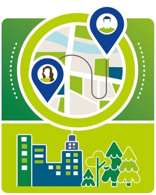
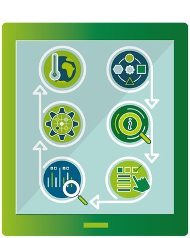
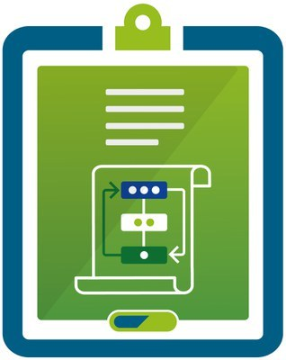

All official European Union website addresses are in the europa.eu domain.
See all EU institutions and bodies
EEA information systems
Environmental information systems
EN
Welcome to the EU Mission on Adaptation to Climate Change Portal
The EU Mission on Adaptation to Climate Change empowers European regions and local authorities to achieve climate resilience, aiming to guide at least 150 communities through understanding climate risks, developing pathways for preparation, and implementing innovative solutions by 2030.
Latest news
Get Involved
The Mission in Numbers
0
Online Community of Practice Members
0
Charter Signatories
0
MIP4Adapt Technical Assistance Recipients
0
Mission Projects
Why is the EU Mission important?
As dangerous climate change looms, with global temperatures already rising over one degree since the industrial revolution, urgent action is needed to mitigate its impacts. Even with reductions in carbon emissions outlined in the Paris Agreement, we're on track for over a two-degree rise by the end of the century, exacerbating extreme weather events and impacting various sectors.
Implementing climate adaptation measures at regional and local levels is imperative to enhance resilience, emphasising the interconnectedness of mitigation and adaptation efforts to ensure effective response to climate change.

SHUTTERSTOCK_2291907943_CREDIT_PEOPLEIMAGES-COM-YURI-A
Explore the Portal

Regions Overview
Learn more about the Charter Signatory regions and local authorities part of the EU Mission

RAST
Regional Adaptation Support Tool: Guidance on your adaptation planning journey.
Mission Solutions
Showcasing the successful implementation of effective climate adaptation solutions.

Mission Projects
Learn about the Mission Projects delivering the EU Mission.
Community of Practice
Facilitating the exchange of knowledge and experiences.
Language preference detected
Do you want to see the page translated into ?
Exclusion of liability
This translation is generated by eTranslation, a machine translation tool provided by the European Commission.